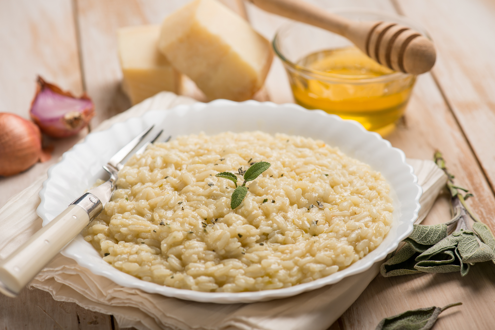

Risotto al Parmigiano

Classic and simple Risotto al Parmigiano
Ingredients
- Arborio Rice - 400g;
- Butter - 1/2 stick;
- Grated parmisan cheese - 1 cup;
- White wine - 150ml;
- 1/2 onion;
- Chicken stock - 1L;
- Olive oil - 1 tablespoon.
Steps
- Heat the pan, add the oliveoil and the sliced onion and let it cook
- Add the arborio rice and cook it for about a minute
- Pour in the wine and stir until the wine is fully absorbed and there is no more alcool
- Add 1/2 cup of the chicken stock and keep stirring until it starts to dry, then add more stock
- Repeat the process until the rice is cooked to al dente
- finish with cold butter and the grated parmisan cheese, mix everything together ant let it cool down for a minute
- Enjoy the classic and simple risotto!